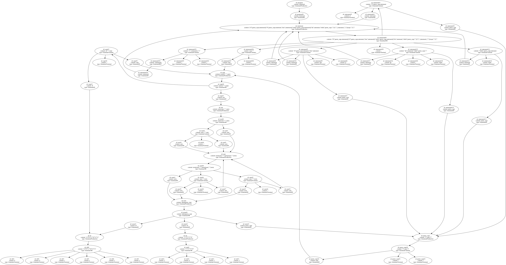

Grammar Graph#
语法图, 顾名思义, 是与语法树对应的。语法图是一个语法文件的图结构表示, 之所以叫做语法图, 是因为该语法里包含“环”, 而通常所说的抽象语法树(AST), 是这个语法图将环展开后的版本, 因此被称为语法树。
program = statement;
statement = ("if", paren_expr, statement)
| ("if", paren_expr, statement, "else", statement)
| ("while", paren_expr, statement)
| ("do", statement, "while", paren_expr, ";")
| ("{", { statement }, "}")
| (expr, ";")
| ";"
;
paren_expr = "(", expr, ")";
expr = test
| (id, "=", expr)
;
test = sum
|( sum, "<", sum)
;
sum = term | (sum, "+", term) | (sum, "-", term);
term = id | int | paren_expr;
id = "a" | "b" | "c" | "d" | "e" | "z";
int = "1" | "2" | "3" | "4";
例如下面是简化版的C语言语法所输出的图。
语法图里会包含不同的节点，节点的类型包括：
Production: 代表一个语法文件的起始，在上述的tinyc语法中，就是
program = statement;Or: 表示可选路径，即
int = "1" | "2" | "3" | "4";，int符号可以选择任意一个数字。Catenate: 表示连接，所有符号都要同时包含。例如
paren_expr = "(", expr, ")";，此处需要同时包含三个符号。Reptition: 表示零次或多次。
Plus: 表示一次或多次。
Subtitue: 二元操作符，表示前者集合中除了后者的部分。
Identifier: 标识符，通常用于开启新的Production。
Terminal: 终结符，用于表示终止节点。例如
int = "1" | "2" | "3" | "4";中的"1"。